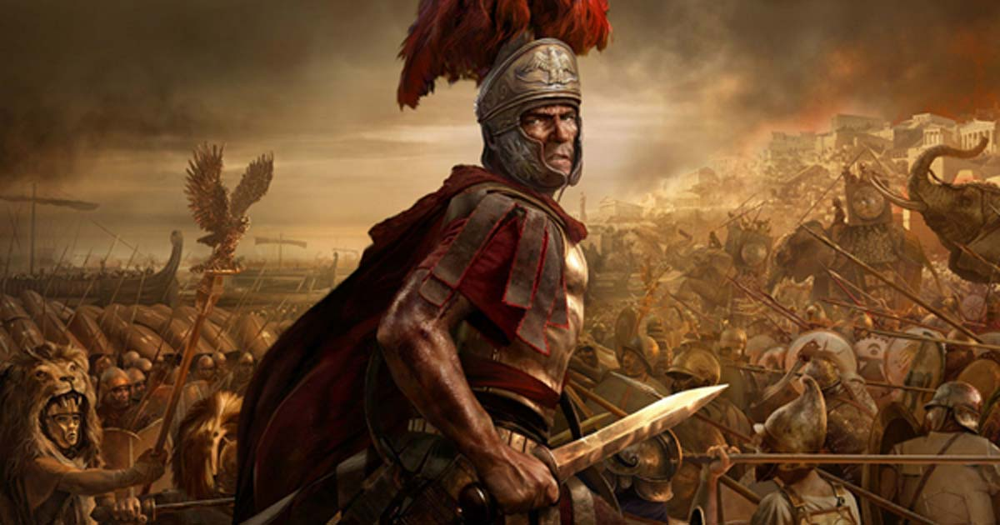
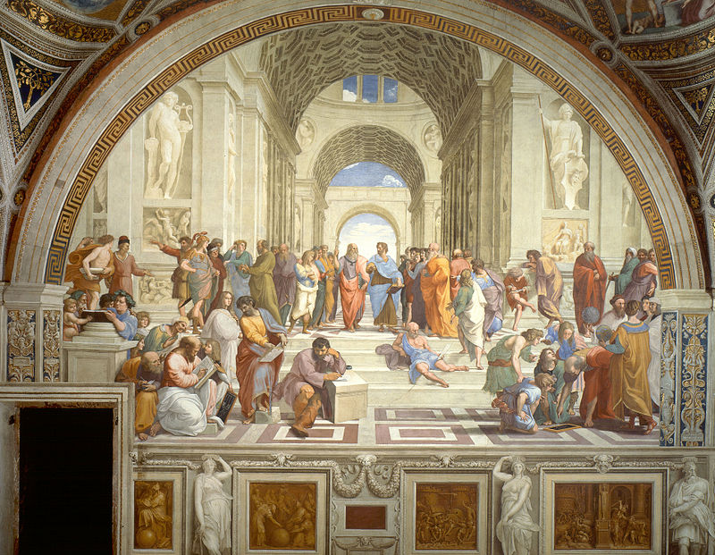
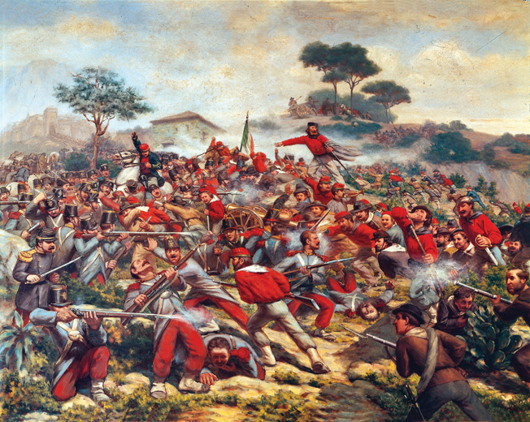

History
Pre-History
Evidence of civilization has been found on the Italian peninsula dating far into pre-history. Thousands of rock drawings discovered in the Alpine regions of Lombardy date from around 8,000 BC. There were sizable settlements throughout the Copper Age (37th to 15th century BC), the Bronze Age (15th to 8th century BC) and the Iron Age (8th to 5th century BC). In the north of Italy, the Etruscan culture took hold around 800BC, while Greeks settled in southern Italy from 700 to 600BC, namely in Apulia, Calabria and Sicily (then known as Magna Graecia).
The Roman Empire
According to legend, Rome was founded by Romulus and Remus in the heart of Etruscan Italy in 735BC. Over the next several centuries, Rome expanded its territories into what became known as the Roman Empire. The Romans named the Italian peninsular “Italia”, which flourished under the Roman Empire. This kingdom, at its height (c. 117 CE), was the most extensive political and social structure in western civilization. By 285 CE the empire had grown too vast to be ruled from the central government at Rome and so was divided by Emperor Diocletian (284-305 CE) into a Western and an Eastern Empire. The Roman Empire began when Augustus Caesar (27 BCE-14 CE) became the first emperor of Rome and ended, in the west, when the last Roman emperor, Romulus Augustulus, was deposed by the Germanic King Odoacer (476 CE). In the east, it continued as the Byzantine Empire until the death of Constantine XI and the fall of Constantinople to the Ottoman Turks in 1453 CE. The influence of the Roman Empire on western civilization was profound in its lasting contributions to virtually every aspect of western culture.
Middle Ages
A brief history of Italy in the Middle Ages begins with a series of invasions. In 493, the Ostrogoths, an eastern Germanic tribe, conquered the Italian peninsula. The resulting Gothic War led to the Lombards, another Germanic tribe, establishing a kingdom in northern Italy and three regions in the South in 568. Subsequently, the popes began building an independent state. In 756, when the Franks (French) defeated the Lombards, they granted the popes authority over central Italy, and the Papal States were created. The northern states of Lombardy, Piedmont, Emilia-Romagna and Tuscany were ruled by the Germanic Holy Roman Empire from 962. By the end of the 11th century, the worst of the invasions was over and trade began to flourish once again. Four Italian cities – Genoa, Pisa, Amalfi and Venice – became major commercial and political powers. In the twelfth century the Italian cities ruled by Holy Roman Empire campaigned for autonomy. The result was that northern Italy became a group of independent kingdoms, republics and city-states.
The Renaissance
At this point in our brief history of Italy, the disparity among the regions was extreme. In contrast to the prosperous northern states, central and southern Italy were economically depressed. The Papacy temporarily relocated to Avignon in France, returning to Rome in 1478. Naples, Sicily, and Sardinia were controlled by foreign powers. The Italian Renaissance was a cultural movement that began in Tuscany in the 14th century, spreading from Florence to Siena. A number of factors contributed to its emergence, including the influx of Greek scholars following the second invasion of Constantinople by the Ottoman Turks in 1453. The patronage of the arts afforded by the Medici family was another contributing factor. The era gave rise to a number of artistic giants – Leonardo Da Vinci, Michelangelo Buonarotti, Sandro Botticelli, Dante Alighieri and Francesco Petrarch, to name a few. The invention of the printing press by Johannes Gutenberg in the 1440s also contributed to a freer flow of information. Reaching southwards to Rome, the Renaissance inspired the Italian popes to rebuild their city and Rome flourished once again. The movement also spread to Milan, Venice, and further north into Europe, influencing art, literature, philosophy, politics, science, religion and other intellectual arenas. Within Italy, the dominance of Tuscan culture led to the Tuscan dialect later becoming the official Italian language.
Early Modern
Once again in this brief history of Italy, a 'golden' era is followed by a dark one. In 1494, France invaded northern Italy and many of the city-states collapsed. In 1527 Spain and Germany attacked Rome. By the end of the “Italian Wars” in 1559, three Italian republics regained their independence – Piedmont Savoy, Corsica-Genoa and Venice. Both Savoy and Corsica were later sold to France – Corsica in 1764 and Savoy in 1860. By 1559 Spain controlled Milan, Naples, Sicily, Sardinia and southern Tuscany, and dominated the rulers of Tuscany, Genoa, and other smaller states in northern Italy. Spanish control of Italy lasted until 1713. During the era of domination by Habsburg Spain (1559 to 1713) and Habsburg Austria (1713 to 1796), Italians enjoyed a long period of relative peace. During the Napoleonic era (1796 to 1814), Italy was briefly united by Napoleon as the Italian Republic and later the Kingdom of Italy, becoming a client state of the French Republic. After the defeat of Napoleonic France in 1814, the Congress of Vienna divided Italy into eight parts, most under foreign rule: Parma, Modena and Tuscany were ruled by the Hapsburgs; Lombardy and Venetia were ruled by Austria; Piedmont-Sardinia-Genoa and the Papal States were independent; and Naples and Sicily were ruled by France. This abysmal condition was the impetus behind the Italian unification movement.
Unification
Our brief history of Italy culminates in unification. The Risorgimento was a complex process that eventually unified the different states of the Italian peninsula into the modern nation of Italy. The movement began in 1815 with a growing resentment towards the peninsula's domination by Austria. Two prominent figures in the unification movement were Giuseppe Mazzini and Giuseppe Garibaldi. A native of Genoa, Mazzini was imprisoned in 1830 for his role in the Carbonari secret society. From his exile in France and later England, he mounted a series of unsuccessful uprisings in Italy, but eventually worked with Garibaldi to achieve their dream of unification. His funeral in 1872 attracted 100,000 people. Giuseppe Garibaldi was born in Nice (Nizza), and, like Mazzini, was a member of the Carbonari secret society. He fled Italy in 1834 after a failed insurrection, but returned in 1854 to continue his campaign. Italy was officially unified in 1861, with Rome and Latium annexed in 1870 and the Trieste region after World War 1.
Fascist Regime
Benito Mussolini was the founder of Fascism and leader of Italy from 1922 to 1943. After World War I, Italy was rocked by economic depression, political turmoil, and popular dissatisfaction from the little territory obtained from the separation of the Austro-Hungary Empire. Constant government turnovers brought the country to the edge of chaos. The middle and upper class became frightened of a left-wing revolution and looked for a strong leader for stability. They turned to Benito Mussolini, the right-wing, anticommunist leader of the Fascist Party. Mussolini was an effective ruler who relatively modernized Italy by his economic policy of state capitalism, but at the cost of his people’s freedoms and their way of life. Once the Depression hit the economy in the 1930’s, Benito became more dictatorial and aligned Italy with the new fascist regime of Nazi Germany. At the outbreak of World War II, Italy was still agriculturally based and had an economy more similar to Czechoslovakia and Hungary then to that of France or England. Mussolini still lead his nation into war and founded the Italian Empire. His regime quickly became a burden on Nazi Germany, becoming unable to win battles on their own. Benito Mussolini was killed in northern Italy while retreating back to Germany with other fascist officials of his short lived Italian Social Republic. Soon after, Italy became a Republic after a referendum held on 2 June 1946, a day celebrated since as Republic Day.